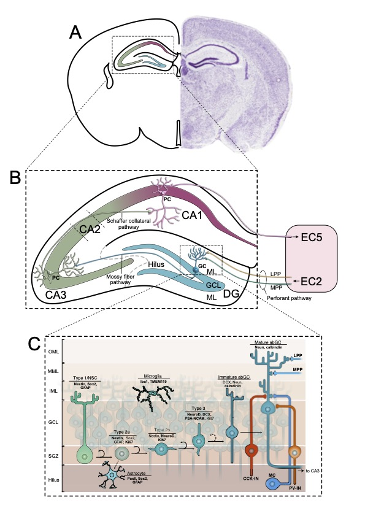

Neurogenesi
Cos'è la Neurogenesi Adulta?
La neurogenesi adulta è la capacità del cervello di produrre nuovi neuroni (cellule nervose) durante l'età adulta. Per molto tempo si è creduto che il cervello adulto non potesse generare nuove cellule nervose, ma la ricerca ha dimostrato che questo processo continua, seppur in misura ridotta, per tutta la vita.
Dove avviene?
Questo fenomeno si verifica principalmente in due aree del cervello:
- L'ippocampo, una struttura cruciale per la memoria e l'apprendimento
- La zona subventricolare, situata sotto i ventricoli cerebrali
Perché è importante?
La neurogenesi adulta è fondamentale per diverse funzioni cerebrali:
- Contribuisce alla plasticità del cervello, ovvero la sua capacità di adattarsi e modificarsi
- Svolge un ruolo importante nella memoria e nell'apprendimento
- Può influenzare le emozioni e la risposta allo stress
- Potrebbe avere un ruolo nella formazione della personalità
Come stimolare la neurogenesi?
Diversi fattori possono favorire la formazione di nuovi neuroni:
- Attività fisica regolare
- Apprendimento di nuove abilità (es. suonare uno strumento, imparare una lingua)
- Riduzione dello stress
- Una dieta equilibrata
- Un sonno adeguato
